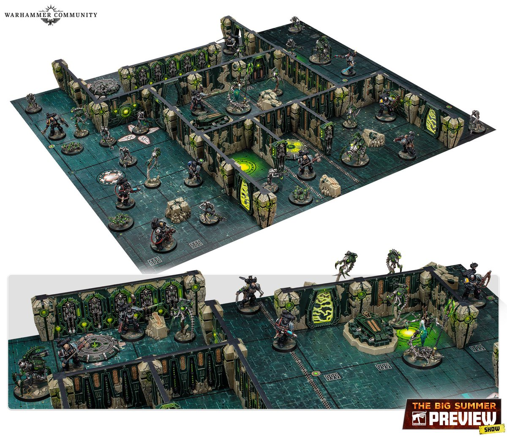
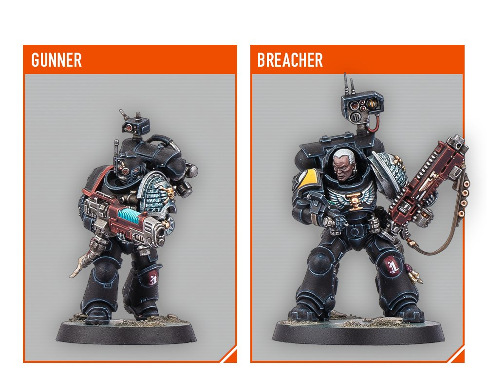
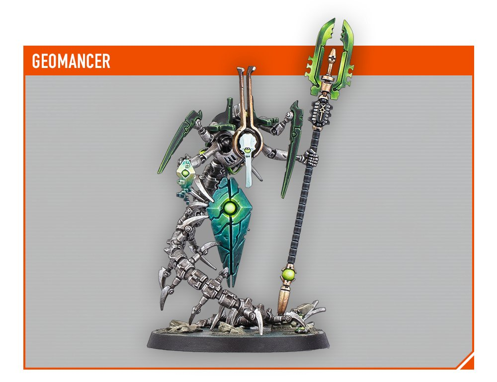

青石巷🍃🕊️
@qingshixiang258
@warhammer4k 先别说了，我问你个事，这b盒子塞武士是想去干什么？？！



Warhammer Official (Parody)
@warhammer4k
Kill teams! That necron Terrain is pretty sexy... I shouldn't pick up a box, I shouldn't...
#Warhammer40k
#WarhammerCommunity https://t.co/0g1plcmpXw